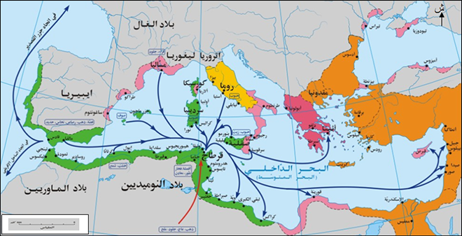
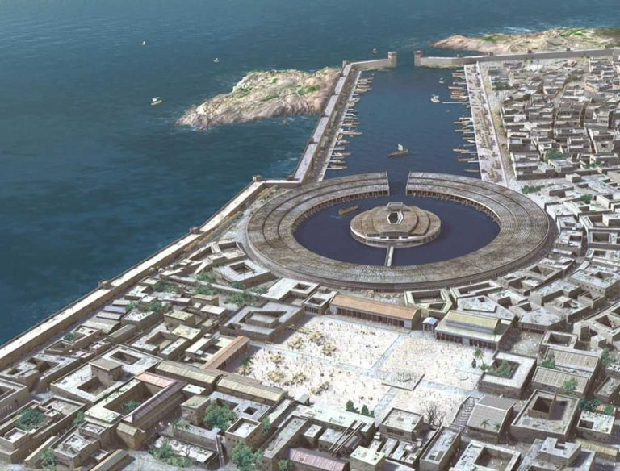
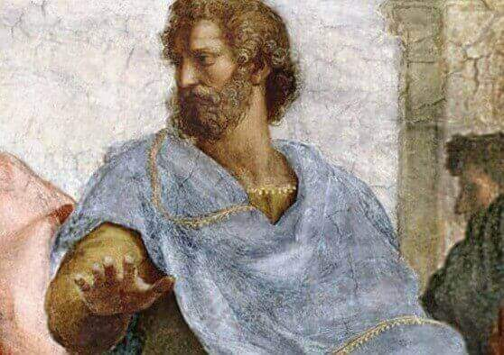
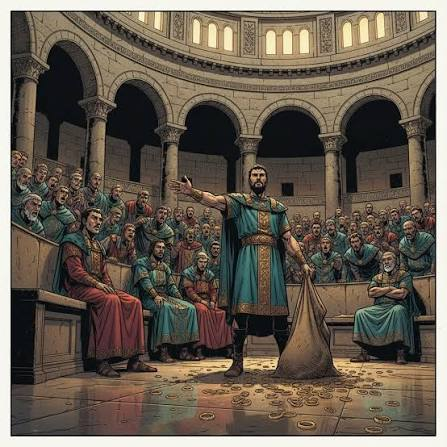
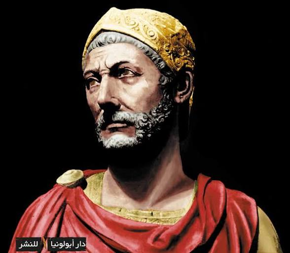
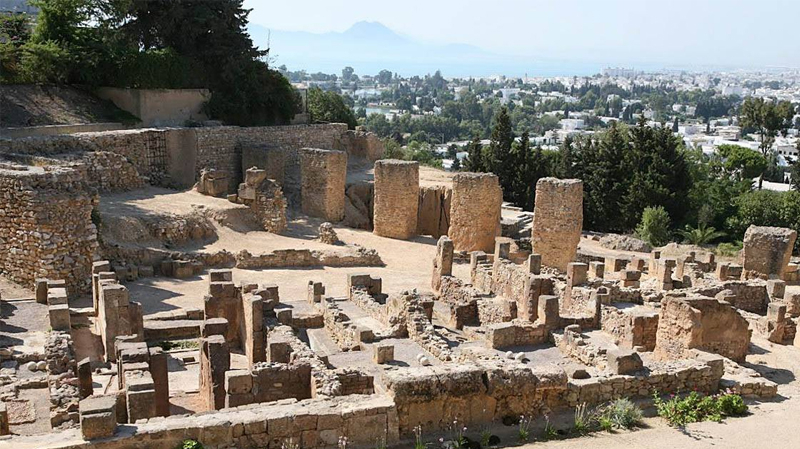

قرطاج: المؤسسات السياسية والديانة
مقدمة
تأسست قرطاج سنة 814 ق.م وتطورت من مستوطنة فينيقية إلى إمبراطورية تمتد على الجزء الغربي من البحر المتوسط. وتميزت باعتماد مؤسسات سياسية متطورة. وقد تحولت بفضل موقعها البحري الاستراتيجي وثرائها التجاري إلى قوة بحرية كبرى امتد نفوذها على سواحل تونس الحالية وغرب ليبيا وصقلية وسردينيا وجزر البليار وجنوب إسبانيا، وأقامت شبكة من المدن والموانئ والمستوطنات المرتبطة بها تجارياً وعسكرياً. وقد اختلفت عن الإمبراطوريات الشرقية الكبرى كالفارسية والمصرية التي قامت على سلطة مطلقة ووراثية، وعن المدن اليونانية التي عانت من صراعات داخلية واضطرابات متكررة.
ما هي خصائص النظام السياسي القرطاجي؟
I النظام السياسي بقرطاج
1. نظام المدينة – الدولة
تميزت قرطاج باعتماد نظام سياسي يُعرف بنظام «المدينة – الدولة»، وهو يتمثل في امتداد نفوذ الدولة على مدينة وضواحيها. ويقوم هذا النظام على أن المدينة هي المركز السياسي والإداري والاقتصادي، وتتبعها المناطق المجاورة والمستوطنات التابعة لها. وقد مكّن هذا النظام قرطاج من الجمع بين مركزية القرار في المدينة ومرونة الإدارة في المستوطنات، وهو ما جعلها أكثر استقراراً من الإمبراطوريات الشرقية التي كانت تعتمد على القهر والجيش للسيطرة على الشعوب، وأكثر تنظيماً من المدن اليونانية التي ظلت محدودة النطاق ومهددة بالفتن الداخلية.
2. المؤسسات السياسية في العهد البوني
نوَّه الفلاسفة الإغريق بالمؤسسات السياسية القرطاجية، ويُعتبر كتاب «السياسة» للفيلسوف الإغريقي أرسطو طاليس من أهم المصادر التي تعرضت إلى النظام السياسي القرطاجي في العهد البوني. كما تحدث عنه المؤرخ بولبيوس وليفي في مرحلة الحرب البونية الثانية. وقد وصف أرسطو هذا النظام بأنه من أفضل الأنظمة لأنه نظام «مختلط» يجمع بين عنصر ملكي في السفطين، وعنصر أرستقراطي في مجلس الشيوخ، وعنصر ديمقراطي في مجلس الشعب، ويحقق التوازن والاستقرار ويقي من الاستبداد ومن اضطراب الدهماء، وهو ما لم تعرفه معظم دول ذلك العصر التي غلب عليها الحكم المطلق أو الوراثي.
أ. مجلس الشعب
يضم كل المواطنين القرطاجيين، وتتمثل صلاحياته في انتخاب أعضاء مجلس الشيوخ والحاكمين، وهو ينظر في عدة مسائل مثل الحرب والسلم وتشريع القوانين. ويجتمع في الساحة العامة عند الحاجة. ولم يكن يضم كل سكان قرطاج، بل المواطنين الأحرار فقط، أما العبيد والأجانب والنساء فكانوا مستبعدين، شأنه في ذلك شأن أثينا وروما. وقد تعاظم دوره منذ أواخر القرن الثالث قبل الميلاد، خاصة في عهد هانيبال وخلال الحروب مع روما، حيث أصبح له دور في محاسبة القادة العسكريين بعد عودتهم من الحملات. ويُعد وجود هذا المجلس ميزة كبيرة لقرطاج مقارنة بالإمبراطورية الفارسية والمصرية اللتين لم تعرفا أي شكل من أشكال تمثيل الشعب أو مشاركته في القرار.
يتمتع مجلس الشعب بسلطة تشريعية.
ب. مجلس الشيوخ
يتكون من 300 عضو عن طريق الانتخاب، ويشترط على المترشح عدة شروط مثل المواطنة والوجاهة والثراء. وله صلاحيات هامة في التشريع والسياسة الخارجية والنظر في بعض القضايا. وكان هو السلطة الفعلية في قرطاج، يهيمن على المالية والسياسة الخارجية وإدارة الحرب، ويرسل القواد ويشرف على الحملات العسكرية، ويضم لجاناً مصغرة تنظر في القضايا الكبرى مثل لجنة الخمسة. ويشبه في بعض وظائفه مجلس الشيوخ الروماني، لكنه كان أكثر انفتاحاً على العناصر التجارية والثرية، وقد ساهم في استقرار السياسة الخارجية وتجنب المغامرات إلا عند الضرورة، خلافاً لبعض المدن اليونانية التي كانت قراراتها تتأرجح بين تضارب المصالح وتقلب الأهواء.
يتمتع مجلس الشيوخ بسلطة تشريعية.
ج. الحكام
ينتخب الشعب حاكمين «سفطين» لمدة سنة واحدة، ويمكن الترشح لهذه الخطة عدة مرات، ويشترط في اختيارهما الثروة والكفاءة. وتتمثل صلاحياتهما في تسيير الشؤون الإدارية والسياسية للدولة وتنفيذ قرارات مجلس الشعب ومجلس الشيوخ. ولفظ «سفط» قريب من الجذر الفينيقي «شفط» بمعنى قاضٍ أو حاكم. وكان السفطان يشبهان إلى حد كبير القنصلين في روما، ويشترط فيهما المواطنة أيضاً، ويرأسان مجلس الشيوخ ويقترحان القوانين، لكن سلطتهما كانت مقيدة بالمؤسسات الأخرى، وقد يشاركان في بعض الوظائف الدينية. ويُعد مبدأ الزوجية في الحكم من أبرز محاسن النظام القرطاجي لأنه يمنع تركيز السلطة في يد فرد واحد، كما أن مدة السنة الواحدة تضمن تداول السلطة وتجديد النخب، وهذا مبدأ نادر في العصور القديمة حيث كان الحكم غالباً وراثياً ومطلقاً كما في فارس ومصر.
يتمتع السفطان بسلطة تنفيذية.
د. محكمة المائة
تتكون من 104 أعضاء، وتنظر في قضايا أمن الدولة والتصدي لمحاولات الحكم الفردي. ويُطلق عليها أحياناً «محكمة المائة والأربعة». وكانت تنظر أيضاً في قضايا الخيانة ومحاسبة القادة العسكريين، وكانت أداة لمراقبة محاولات الاستبداد ومنع تركيز السلطة. ويتمتع القضاة بنفوذ قوي إلى حدود 196 ق.م، تاريخ سن قانون ينص على انتخاب القضاة لمدة سنة واحدة ولا يحق الترشح للخطة مرتين متتاليتين، وقد نُسب هذا الإصلاح إلى هانيبال. وتُعد هذه المحكمة من أقدم صور المحاسبة السياسية والقضائية في التاريخ القديم، إذ ساهمت في سيادة القانون وردع المتجاوزين، وهي ميزة لم تعرفها الإمبراطوريات الشرقية التي كان فيها الحاكم فوق القانون والمحاسبة.
3. خصائص النظام السياسي القرطاجي
- كان النظام السياسي خلال القرنين الخامس والرابع قبل الميلاد نخبوياً يمنح السلطة لمجلس الشيوخ وللعائلات الثرية.
- أصبح لمجلس الشعب مكانة هامة منذ أواخر القرن الثالث قبل الميلاد إلى تاريخ سقوط قرطاج 146 ق.م، حيث تعاظمت مكانته على حساب مجلس الشيوخ والسفطين، وبهيمنة الشعب أصبح الحكم ديمقراطياً.
- ورغم وصف هذا النظام بالديمقراطي، فإنه لم يكن ديمقراطياً شاملاً، إذ استبعد النساء والعبيد والأجانب من المشاركة السياسية.
- ويُعد هذا النظام من أرقى الأنظمة السياسية في العالم القديم لأنه قام على التوازن بين السلطات وتداولها ومحاسبتها، وهو ما جعل قرطاج أكثر استقراراً من فارس ومصر، وأكثر توازناً من أثينا، وأقرب إلى روما في بنيتها الجمهورية مع فارق أن قرطاج كانت جمهورية تجارية بحرية بينما كانت روما جمهورية عسكرية توسعية.
خاتمة
جمع النظام السياسي القرطاجي بين عناصر الملكية والأرستقراطية والديمقراطية في نظام «مختلط» توازن فيه مجلس الشعب ومجلس الشيوخ والسفطان ومحكمة المائة، مما جعله من أرقى الأنظمة السياسية في العالم القديم وأكثرها استقراراً، وجعل قرطاج أكثر توازناً من المدن اليونانية وأكثر استقراراً من الإمبراطوريات الشرقية.
📖 تعريفات
👤 شخصيات
- أرسطو طاليس: فيلسوف إغريقي صاحب كتاب «السياسة»، وهو من أهم المصادر التي تعرضت إلى النظام السياسي القرطاجي في العهد البوني، ووصفه بأنه نظام «مختلط» يجمع بين عنصر ملكي في السفطين، وعنصر أرستقراطي في مجلس الشيوخ، وعنصر ديمقراطي في مجلس الشعب، وعدّه من أفضل الأنظمة.
- بولبيوس: مؤرخ تحدث عن النظام السياسي القرطاجي في مرحلة الحرب البونية الثانية.
- ليفي: مؤرخ تحدث عن النظام السياسي القرطاجي في مرحلة الحرب البونية الثانية.
- هانيبال: ارتبط اسمه بتعاظم دور مجلس الشعب في قرطاج خلال الحروب مع روما، ونُسب إليه الإصلاح القضائي سنة 196 ق.م الذي نصّ على انتخاب قضاة محكمة المائة لمدة سنة واحدة ومنع الترشح مرتين متتاليتين.
🌍 دول ومناطق
- قرطاج: مستوطنة فينيقية تأسست سنة 814 ق.م، وتطورت إلى إمبراطورية تمتد على الجزء الغربي من البحر المتوسط، وامتد نفوذها على سواحل تونس الحالية وغرب ليبيا وصقلية وسردينيا وجزر البليار وجنوب إسبانيا، وأقامت شبكة من المدن والموانئ والمستوطنات.
- فارس: إمبراطورية شرقية كبرى قامت على سلطة مطلقة ووراثية، ولم تعرف أي شكل من أشكال تمثيل الشعب أو مشاركته في القرار، بخلاف قرطاج.
- مصر: إمبراطورية شرقية كبرى قامت على سلطة مطلقة ووراثية، وكان الحاكم فيها فوق القانون والمحاسبة، بخلاف قرطاج التي عرفت مؤسسات للمحاسبة.
- أثينا: مدينة إغريقية استبعدت النساء والعبيد والأجانب من المشاركة السياسية، شأنها شأن قرطاج.
- روما: جمهورية عسكرية توسعية، يشبه نظامها الجمهوري نظام قرطاج في بنيته، مع فارق أن قرطاج كانت جمهورية تجارية بحرية.
- صقلية: جزيرة في البحر المتوسط امتد إليها نفوذ قرطاج.
- سردينيا: جزيرة في البحر المتوسط امتد إليها نفوذ قرطاج.
- جزر البليار: مجموعة جزر في غرب البحر المتوسط امتد إليها نفوذ قرطاج.
- جنوب إسبانيا: منطقة امتد إليها نفوذ قرطاج في غرب البحر المتوسط.
- تونس: امتد النفوذ القرطاجي على سواحلها الحالية.
- ليبيا: امتد النفوذ القرطاجي على غربها.
⚔️ أحداث هامة
- تأسيس قرطاج (814 ق.م): تأسيس قرطاج كمستوطنة فينيقية سنة 814 ق.م قبل أن تتحول إلى إمبراطورية في غرب البحر المتوسط.
- الحرب البونية الثانية: المرحلة التي تحدث فيها المؤرخ بولبيوس وليفي عن النظام السياسي القرطاجي.
- إصلاح 196 ق.م: إصلاح قضائي نُسب إلى هانيبال، نصّ على انتخاب قضاة محكمة المائة لمدة سنة واحدة ومنع الترشح للخطة مرتين متتاليتين، للحد من نفوذ القضاة ومنع تركيز السلطة.
- سقوط قرطاج (146 ق.م): التاريخ الذي شهد سقوط قرطاج، وهو الحد الذي انتهت عنده هيمنة مجلس الشعب على حساب مجلس الشيوخ والسفطين.
📅 سنوات وفترات
- 814 ق.م: تأسيس قرطاج.
- القرنان الخامس والرابع قبل الميلاد: مرحلة النظام النخبوي الذي منح السلطة لمجلس الشيوخ وللعائلات الثرية.
- أواخر القرن الثالث قبل الميلاد: بداية تعاظم دور مجلس الشعب على حساب مجلس الشيوخ والسفطين.
- 196 ق.م: سنّ قانون انتخاب قضاة محكمة المائة لمدة سنة واحدة ومنع الترشح مرتين متتاليتين.
- 146 ق.م: تاريخ سقوط قرطاج.
📌 أخرى
- نظام المدينة – الدولة: نظام سياسي يتمثل في امتداد نفوذ الدولة على مدينة وضواحيها، حيث تكون المدينة المركز السياسي والإداري والاقتصادي وتتبعها المناطق المجاورة والمستوطنات. مكّن قرطاج من الجمع بين مركزية القرار في المدينة ومرونة الإدارة في المستوطنات.
- السفط: لفظ قريب من الجذر الفينيقي «شفط» بمعنى قاضٍ أو حاكم. يُنتخب اثنان من السفطين لمدة سنة واحدة، ويشترط فيهما المواطنة والثروة والكفاءة. يتمتعان بسلطة تنفيذية، ويرأسان مجلس الشيوخ ويقترحان القوانين، لكن سلطتهما مقيدة بالمؤسسات الأخرى، وقد يشاركان في بعض الوظائف الدينية، ويشبهان القنصلين في روما.
- مجلس الشعب: مؤسسة سياسية قرطاجية تضم المواطنين الأحرار فقط (استُبعد منها النساء والعبيد والأجانب). ينتخب أعضاء مجلس الشيوخ والحاكمين، وينظر في مسائل الحرب والسلم وتشريع القوانين. تعاظم دوره منذ أواخر القرن الثالث قبل الميلاد خاصة في عهد هانيبال. يتمتع بسلطة تشريعية.
- مجلس الشيوخ: يتكون من 300 عضو منتخب، بشرط المواطنة والوجاهة والثراء. كان السلطة الفعلية في قرطاج، يهيمن على المالية والسياسة الخارجية وإدارة الحرب، ويرسل القواد ويشرف على الحملات العسكرية. يضم لجاناً مصغرة مثل «لجنة الخمسة». يتمتع بسلطة تشريعية، ويشبه في بعض وظائفه مجلس الشيوخ الروماني.
- محكمة المائة: تتكون من 104 أعضاء، تُعرف أيضاً بـ«محكمة المائة والأربعة». تنظر في قضايا أمن الدولة والخيانة ومحاسبة القادة العسكريين، وكانت أداة لمراقبة محاولات الاستبداد ومنع تركيز السلطة. سنة 196 ق.م سُنّ قانون بفضل هانيبال ينص على انتخاب القضاة لمدة سنة واحدة ومنع الترشح مرتين متتاليتين.
- لجنة الخمسة: لجنة مصغرة داخل مجلس الشيوخ القرطاجي تنظر في القضايا الكبرى.
🗺️ خرائط ومعطيات مصورة





